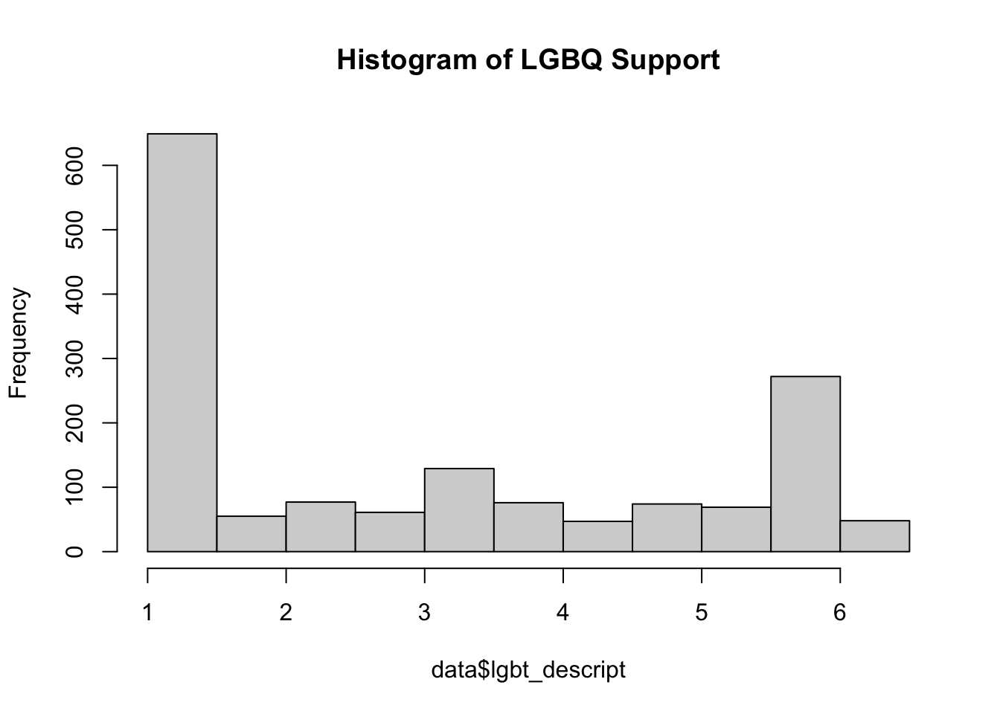
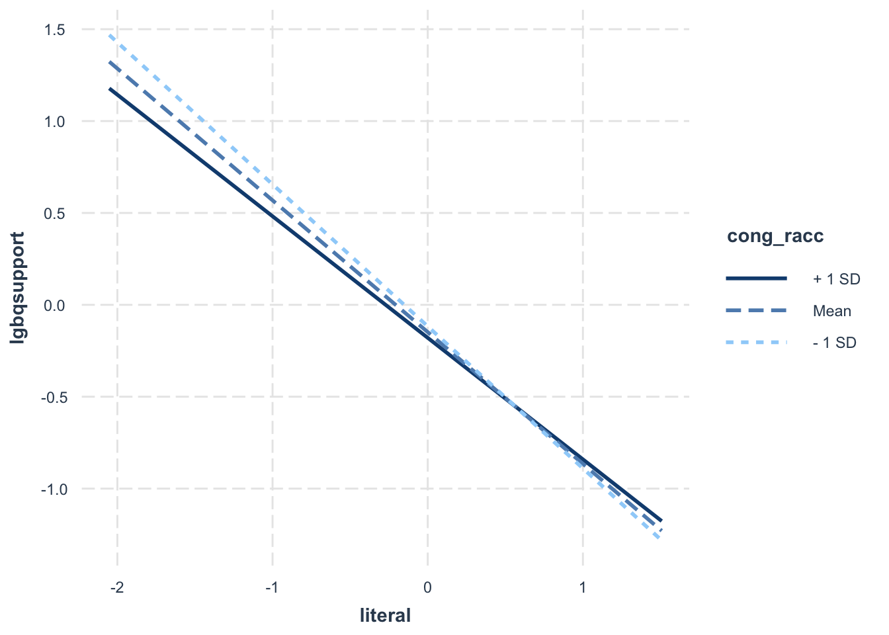

# install.packages("pacman")
pacman::p_load(haven, tidyverse, psych, apaTables, gtsummary, gt, rempsyc, flextable, jtools, interactions)Analysis
LGBQ Support & U.S. Christian Religious Leaders
Running syntax
If you are unfamiliar with R please read below.
To run this syntax file, you need to install the package {pacman} which will identify if you need to install any packages (and subsequently load them them).
Otherwise, you should be able to “Run All” without having to make any changes to reproduce analyses.
Preparation
Please run the code below if you do not have the package {pacman} installed.
Load “pacman”
Load data
org_data <- read_sav("Data.sav")
data <- org_dataLowercase all variable names
names(data) <- tolower(names(data))SessionInfo
sessionInfo() R version 4.4.0 (2024-04-24) Platform: aarch64-apple-darwin20 Running under: macOS Sonoma 14.5
Matrix products: default BLAS: /System/Library/Frameworks/Accelerate.framework/Versions/A/Frameworks/vecLib.framework/Versions/A/libBLAS.dylib LAPACK: /Library/Frameworks/R.framework/Versions/4.4-arm64/Resources/lib/libRlapack.dylib; LAPACK version 3.12.0
locale: [1] en_US.UTF-8/en_US.UTF-8/en_US.UTF-8/C/en_US.UTF-8/en_US.UTF-8
time zone: America/Los_Angeles tzcode source: internal
attached base packages: [1] stats graphics grDevices utils datasets methods base
other attached packages: [1] interactions_1.1.5 jtools_2.2.2 flextable_0.9.6 rempsyc_0.1.7 gt_0.10.1
[6] gtsummary_1.7.2 apaTables_3.0.0 psych_2.4.3 lubridate_1.9.3 forcats_1.0.0
[11] stringr_1.5.1 dplyr_1.1.4 purrr_1.0.2 readr_2.1.5 tidyr_1.3.1
[16] tibble_3.2.1 ggplot2_3.5.1 tidyverse_2.0.0 haven_2.5.4
loaded via a namespace (and not attached): [1] tidyselect_1.2.1 fastmap_1.2.0 fontquiver_0.2.1 pacman_0.5.1
[5] bayestestR_0.13.2 promises_1.3.0 broom.helpers_1.15.0 digest_0.6.35
[9] estimability_1.5.1 timechange_0.3.0 mime_0.12 lifecycle_1.0.4
[13] gfonts_0.2.0 survival_3.5-8 magrittr_2.0.3 compiler_4.4.0
[17] rlang_1.1.4 tools_4.4.0 utf8_1.2.4 data.table_1.15.4
[21] knitr_1.47 askpass_1.2.0 mnormt_2.1.1 curl_5.2.1
[25] xml2_1.3.6 httpcode_0.3.0 withr_3.0.0 datawizard_0.10.0
[29] grid_4.4.0 fansi_1.0.6 gdtools_0.3.7 xtable_1.8-4
[33] colorspace_2.1-0 emmeans_1.10.2 scales_1.3.0 crul_1.4.2
[37] insight_0.19.11 mvtnorm_1.2-4 cli_3.6.2 survey_4.4-2
[41] rmarkdown_2.27 crayon_1.5.2 ragg_1.3.2 generics_0.1.3
[45] performance_0.11.0 rstudioapi_0.16.0 tzdb_0.4.0 parameters_0.21.6
[49] DBI_1.2.2 pander_0.6.5 splines_4.4.0 parallel_4.4.0
[53] effectsize_0.8.8 mitools_2.4 vctrs_0.6.5 Matrix_1.7-0
[57] jsonlite_1.8.8 fontBitstreamVera_0.1.1 hms_1.1.3 systemfonts_1.1.0
[61] glue_1.7.0 stringi_1.8.4 gtable_0.3.5 later_1.3.2
[65] munsell_0.5.1 pillar_1.9.0 htmltools_0.5.8.1 openssl_2.2.0
[69] R6_2.5.1 textshaping_0.4.0 evaluate_0.23 shiny_1.8.1.1
[73] lattice_0.22-6 papaja_0.1.2 backports_1.5.0 broom_1.0.6
[77] fontLiberation_0.1.0 httpuv_1.6.15 Rcpp_1.0.12 zip_2.3.1
[81] uuid_1.2-0 coda_0.19-4.1 nlme_3.1-164 officer_0.6.6
[85] xfun_0.44 tinylabels_0.2.4 pkgconfig_2.0.3
Demographic Table
Minor Edits
For some reason it looks like value labels are missing in the datat for hhincome variable. Thankfully the codebook denotes a value to its corresponding label.
| Value | Label |
|---|---|
| 1 | $0-$9,999 |
| 2 | $10,000-$14,999 |
| 3 | $15,000-$19,999 |
| 4 | $20,000-$24,999 |
| 5 | $25,000-$34,999 |
| 6 | $35,000-$49,999 |
| 7 | $50,000-$74,999 |
| 8 | $75,000-$99,999 |
| 9 | $100,000-$124,999 |
| 10 | $125,000-$149,999 |
| 11 | $150,000-$174,999 |
| 12 | $175,000-$199,999 |
| 13 | $200,000 or more |
Let’s add these value labels to the variable hhincome.
data$hhincome <- labelled_spss(data$hhincome,
labels = c(
"$0 - $9,999" = 1,
"$10,000 - $14,999" = 2,
"$15,000 - $19,999" = 3,
"$20,000 - $24,999" = 4,
"$25,000 - $34,999" = 5,
"$35,000 - $49,999" = 6,
"$50,000 - $74,999" = 7,
"$75,000 - $99,999" = 8,
"$100,000 - $124,999" = 9,
"$125,000 - $149,999" = 10,
"$150,000 - $174,999" = 11,
"$175,000 - $199,999" = 12,
"$200,000 or more" = 13
),
label = "Total Income")Table
# First we create a subset of data that we want a summary of.
dem_data <- subset(data, select = c(yearborn, gender, race, educ, timeserv, hhincome))
# We need to convert labelled data into factors.
dem_data <- dem_data %>%
mutate(across(c(yearborn, gender, race, educ, hhincome), ~ haven::as_factor(.)))
# Create the summary table using the full data frame
dem_table <- gtsummary::tbl_summary(
dem_data,
include = c(yearborn, gender, race, educ, timeserv, hhincome),
missing = "ifany",
statistic = list(
all_continuous() ~ "{mean} ({sd})",
all_categorical() ~ "{n} ({p}%)"
),
digits = list(
all_continuous() ~ 2,
all_categorical() ~ c(0, 2)
),
label = list(
yearborn ~ "Year Born",
gender ~ "Gender",
race ~ "Race/Ethnicity",
educ ~ "Educational Attainment",
timeserv ~ "Years in Ministry",
hhincome ~ "Income"
)
)
dem_table %>%
as_flex_table() %>%
flextable::save_as_docx(path = "dem_table.docx")
dem_table <- dem_table %>%
as_flex_table()
dem_table <- set_caption(dem_table, "Table 1: Demographic Table")
dem_table <- font(dem_table, fontname = "Times New Roman", part = "all")
dem_tableCharacteristic | N = 1,6001 |
|---|---|
Year Born | |
1930-1939 | 23 (1.52%) |
1940-1949 | 132 (8.72%) |
1950-1959 | 400 (26.42%) |
1960-1969 | 388 (25.63%) |
1970-1979 | 281 (18.56%) |
1980-1989 | 236 (15.59%) |
1990-1999 | 54 (3.57%) |
Unknown | 86 |
Gender | |
Male | 1,144 (74.48%) |
Female | 392 (25.52%) |
Other | 0 (0.00%) |
Unknown | 64 |
Race/Ethnicity | |
White or Am Ind | 1,176 (77.11%) |
Black | 185 (12.13%) |
Hispanic | 112 (7.34%) |
Asian/PI | 52 (3.41%) |
Unknown | 75 |
Educational Attainment | |
No College or formal pastoral or ministerial training | 51 (3.31%) |
Any formal pastoral or ministerial training (e.g., Bible College) | 146 (9.47%) |
Bachelor's degree | 295 (19.14%) |
Graduate degree (no MDiv) | 172 (11.16%) |
MDiv | 877 (56.91%) |
Unknown | 59 |
Years in Ministry | 20.24 (13.17) |
Unknown | 15 |
Income | |
$0 - $9,999 | 35 (2.81%) |
$10,000 - $14,999 | 11 (0.88%) |
$15,000 - $19,999 | 12 (0.96%) |
$20,000 - $24,999 | 17 (1.37%) |
$25,000 - $34,999 | 74 (5.95%) |
$35,000 - $49,999 | 139 (11.17%) |
$50,000 - $74,999 | 265 (21.30%) |
$75,000 - $99,999 | 234 (18.81%) |
$100,000 - $124,999 | 140 (11.25%) |
$125,000 - $149,999 | 117 (9.41%) |
$150,000 - $174,999 | 82 (6.59%) |
$175,000 - $199,999 | 38 (3.05%) |
$200,000 or more | 80 (6.43%) |
Unknown | 356 |
1n (%); Mean (SD) | |
Analysis
H1
Among US Christian religious leaders, what is the average level of LGBQ support?
Mean/SD
# Create compsite without standardization for descriptives
data$lgbt_descript <- (data$gaymarry + data$orient) / 2
weighted_mean <- weighted.mean(data$lgbt_descript, data$wt_nsrl_primary_dup, na.rm = TRUE)
weighted_mean <- round(weighted_mean, digits = 2)
weighted_sd <- sqrt(sum(data$wt_nsrl_primary_dup[!is.na(data$lgbt_descript)] *
(data$lgbt_descript[!is.na(data$lgbt_descript)] - weighted_mean)^2, na.rm = TRUE) /
sum(data$wt_nsrl_primary_dup[!is.na(data$lgbt_descript)], na.rm = TRUE))
weighted_sd <- round(weighted_sd, digits = 2)
print(paste("Weighted Mean:", weighted_mean))[1] "Weighted Mean: 2.61"print(paste("Weighted Standard Deviation:", weighted_sd))[1] "Weighted Standard Deviation: 2.02"hist(data$lgbt_descript, main = "Histogram of LGBQ Support")
Range
# Calculate weighted minimum and maximum
weighted_min <- min(data$lgbt_descript[data$wt_nsrl_primary_dup > 0], na.rm = TRUE)
weighted_max <- max(data$lgbt_descript[data$wt_nsrl_primary_dup > 0], na.rm = TRUE)
# Calculate the range
weighted_range <- weighted_max - weighted_min
# Print results
print(paste("Weighted Minimum:", weighted_min))[1] "Weighted Minimum: 1"print(paste("Weighted Maximum:", weighted_max))[1] "Weighted Maximum: 6.5"print(paste("Weighted Range:", weighted_range))[1] "Weighted Range: 5.5"Composite Variables
Prior to running analyses, we will create composite variables assessing for good internal reliability
LGBQ Support
# Standardize variables
data$gaymarry1 <- scale(data$gaymarry)
data$orient1 <- scale(data$orient)
source("Spearman_Brown.R")
spearman_brown(data, items = c("gaymarry1", "orient1")) correlation spearman_brown
0.6121398 0.7594128LGBQ Support demonstrates acceptable internal reliability.
# Create composite variable
data$lgbqsupport <- (data$gaymarry1 + data$orient1) / 2Race
race_dummy <- dummy.code(data$race)
data <- cbind(data, race_dummy)
# Rename the new columns
colnames(data)[(ncol(data) - 3):ncol(data)] <- c("white", "black", "hispanic", "asian")
data$poc <- ifelse(data$race == 1, 0, 1)LITERAL
# We need to reverse code Bible first
data$bible <- 6 - data$bible
# Standardize variables
data$bible1 <- scale(data$bible)
data$sixdays1 <- scale(data$sixdays)
data$yngearth1 <- scale(data$yngearth)
data$cremirac1 <- scale(data$cremirac)literal_cor <- subset(data, select = c(bible1, sixdays1, yngearth1, cremirac1))
alpha(literal_cor, check.keys = TRUE, na.rm = TRUE)Number of categories should be increased in order to count frequencies.
Reliability analysis
Call: alpha(x = literal_cor, na.rm = TRUE, check.keys = TRUE)
raw_alpha std.alpha G6(smc) average_r S/N ase mean sd median_r
0.84 0.84 0.81 0.56 5.1 0.0068 -0.0055 0.83 0.54
95% confidence boundaries
lower alpha upper
Feldt 0.82 0.84 0.85
Duhachek 0.82 0.84 0.85
Reliability if an item is dropped:
raw_alpha std.alpha G6(smc) average_r S/N alpha se var.r med.r
bible1 0.82 0.82 0.77 0.60 4.5 0.0080 0.01473 0.57
sixdays1 0.75 0.75 0.66 0.50 3.0 0.0110 0.00007 0.50
yngearth1 0.78 0.78 0.71 0.55 3.6 0.0095 0.00136 0.57
cremirac1 0.82 0.82 0.77 0.60 4.5 0.0081 0.01544 0.57
Item statistics
n raw.r std.r r.cor r.drop mean sd
bible1 1526 0.79 0.78 0.66 0.60 -7.0e-16 1
sixdays1 1547 0.88 0.88 0.85 0.77 3.8e-16 1
yngearth1 1544 0.83 0.83 0.77 0.69 5.9e-17 1
cremirac1 1541 0.79 0.79 0.66 0.61 2.9e-16 1This composite variable demonstrates good internal reliability.
# Create composite variable
data$literal <- (data$bible1 + data$sixdays1 + data$yngearth1 + data$cremirac1) / 4Prayer
# As a count variable this variable will not be standardized
data$praysolo1 <- scale(data$praysolo)
data$grace1 <- scale(data$grace)
spearman_brown(data, items = c("praysolo1", "grace1")) correlation spearman_brown
0.4568301 0.6271563The items do not display acceptable internal reliability. As two items it is also inappropriate to perform a EFA. We will analyze prayer individually.
Cong_Race
data$cong_racc <- ifelse(data$cong_race == 1, 0, 1)Gender
Gender needs to be recoded, as the values are currently 1 and 2, when it should be 0 and 1.
data$gender <- ifelse(data$gender == 1, 0, 1)H2
Psychosocial Correlates
cor_data <- subset(data, select = c(
lgbqsupport,
gender, white, black, hispanic, asian, yearborn, educ, # demographic
timeserv, hhincome,
doubt, # religiousness
god, literal, grace, praysolo, # spiritual
cong_size,
cong_race
))
cor_table <- apa.cor.table(data = cor_data, table.number = 1, show.conf.interval = FALSE, show.pvalue = TRUE)
apa.save(filename = "cor_table.doc", cor_table)H3
Religious doubt (measured by the DOUBT item) will be positively associated with LGBQ support (measured by the “LGBQSUPPORT” item)
rq3 <- lm(lgbqsupport ~ doubt + gender + poc + educ + yearborn + hhincome, data = data, weights = wt_nsrl_primary_dup)
rq3 %>%
summ(digits = 3)| Observations | 1203 (397 missing obs. deleted) |
| Dependent variable | lgbqsupport |
| Type | OLS linear regression |
| F(6,663) | 84.851 |
| R² | 0.434 |
| Adj. R² | 0.429 |
| Est. | S.E. | t val. | p | |
|---|---|---|---|---|
| (Intercept) | -1.294 | 0.150 | -8.627 | 0.000 |
| doubt | 0.534 | 0.052 | 10.294 | 0.000 |
| gender | 1.021 | 0.071 | 14.343 | 0.000 |
| poc | -0.112 | 0.063 | -1.792 | 0.074 |
| educ | 0.121 | 0.022 | 5.454 | 0.000 |
| yearborn | -0.061 | 0.025 | -2.403 | 0.017 |
| hhincome | -0.005 | 0.011 | -0.478 | 0.633 |
| Standard errors: OLS |
Results show that even after controlling for demographic covariates, religious doubt remains a predictor of LGBQ support. Such that as religious doubt increases, LGBQ support also increases.
H4a-c
rq4ac <- lm(lgbqsupport ~ literal + praysolo + grace + god + gender + poc + yearborn + educ, data = data, weights = wt_nsrl_primary_dup)
rq4ac %>%
summ(digits = 3)| Observations | 1393 (207 missing obs. deleted) |
| Dependent variable | lgbqsupport |
| Type | OLS linear regression |
| F(8,776) | 192.024 |
| R² | 0.664 |
| Adj. R² | 0.661 |
| Est. | S.E. | t val. | p | |
|---|---|---|---|---|
| (Intercept) | 0.352 | 0.186 | 1.891 | 0.059 |
| literal | -0.612 | 0.025 | -24.599 | 0.000 |
| praysolo | -0.103 | 0.026 | -3.940 | 0.000 |
| grace | -0.024 | 0.019 | -1.249 | 0.212 |
| god | 0.107 | 0.054 | 1.975 | 0.049 |
| gender | 0.502 | 0.051 | 9.804 | 0.000 |
| poc | -0.036 | 0.036 | -1.000 | 0.318 |
| yearborn | -0.041 | 0.015 | -2.655 | 0.008 |
| educ | 0.041 | 0.014 | 2.925 | 0.004 |
| Standard errors: OLS |
H5a
# Center IV and Moderator
data$lgbqsupport <- scale(data$lgbqsupport)
data$cong_size <- scale(data$cong_size)
h5a <- lm(lgbqsupport ~ literal * cong_size + gender + black + white + hispanic + yearborn + educ, data = data, weights = wt_nsrl_primary_dup)
h5a %>%
summ(digits = 3)| Observations | 1399 (201 missing obs. deleted) |
| Dependent variable | lgbqsupport |
| Type | OLS linear regression |
| F(9,779) | 161.991 |
| R² | 0.652 |
| Adj. R² | 0.648 |
| Est. | S.E. | t val. | p | |
|---|---|---|---|---|
| (Intercept) | -0.181 | 0.205 | -0.881 | 0.378 |
| literal | -0.706 | 0.050 | -14.092 | 0.000 |
| cong_size | -0.037 | 0.029 | -1.274 | 0.203 |
| gender | 0.597 | 0.057 | 10.394 | 0.000 |
| black | -0.180 | 0.176 | -1.021 | 0.307 |
| white | -0.105 | 0.173 | -0.606 | 0.544 |
| hispanic | -0.089 | 0.187 | -0.478 | 0.633 |
| yearborn | -0.039 | 0.017 | -2.234 | 0.026 |
| educ | 0.044 | 0.016 | 2.699 | 0.007 |
| literal:cong_size | 0.027 | 0.033 | 0.824 | 0.410 |
| Standard errors: OLS |
H5b
h5b <- lm(lgbqsupport ~ literal * cong_racc + gender + asian + black + hispanic + yearborn + educ, data = data, weights = wt_nsrl_primary_dup)
h5b %>%
summ(digits = 3)| Observations | 1381 (219 missing obs. deleted) |
| Dependent variable | lgbqsupport |
| Type | OLS linear regression |
| F(9,768) | 160.354 |
| R² | 0.653 |
| Adj. R² | 0.649 |
| Est. | S.E. | t val. | p | |
|---|---|---|---|---|
| (Intercept) | -0.195 | 0.100 | -1.945 | 0.052 |
| literal | -0.768 | 0.030 | -25.275 | 0.000 |
| cong_racc | -0.063 | 0.059 | -1.065 | 0.287 |
| gender | 0.587 | 0.058 | 10.105 | 0.000 |
| asian | 0.102 | 0.174 | 0.585 | 0.559 |
| black | -0.071 | 0.061 | -1.156 | 0.248 |
| hispanic | 0.061 | 0.089 | 0.680 | 0.497 |
| yearborn | -0.044 | 0.017 | -2.506 | 0.012 |
| educ | 0.039 | 0.016 | 2.408 | 0.016 |
| literal:cong_racc | 0.112 | 0.055 | 2.040 | 0.042 |
| Standard errors: OLS |
nice_lm_slopes(h5b, predictor = "literal", moderator = "cong_racc", standardize = FALSE) %>%
nice_table()Dependent Variable | Predictor (+/-1 SD) | df | b | t | p | sr2 | 95% CI |
|---|---|---|---|---|---|---|---|
lgbqsupport | literal (LOW-cong_racc) | 1,371 | -0.86 | -18.83 | < .001*** | .12 | [0.09, 0.14] |
literal (MEAN-cong_racc) | 768 | -0.77 | -25.27 | < .001*** | .36 | [0.31, 0.41] | |
literal (HIGH-cong_racc) | 1,371 | -0.75 | -28.94 | < .001*** | .27 | [0.24, 0.31] |
interact_plot(h5b,
literal,
cong_racc,
data = data)Warning: -0.0419758007537014 is outside the observed range of cong_racc